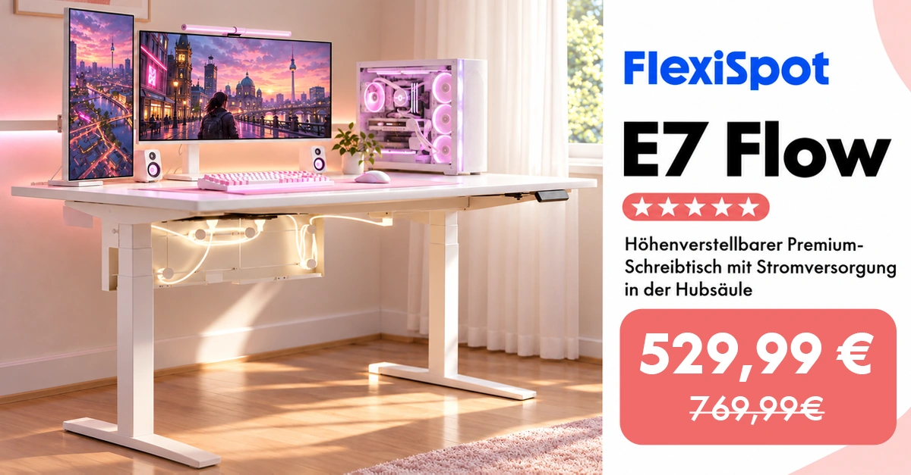
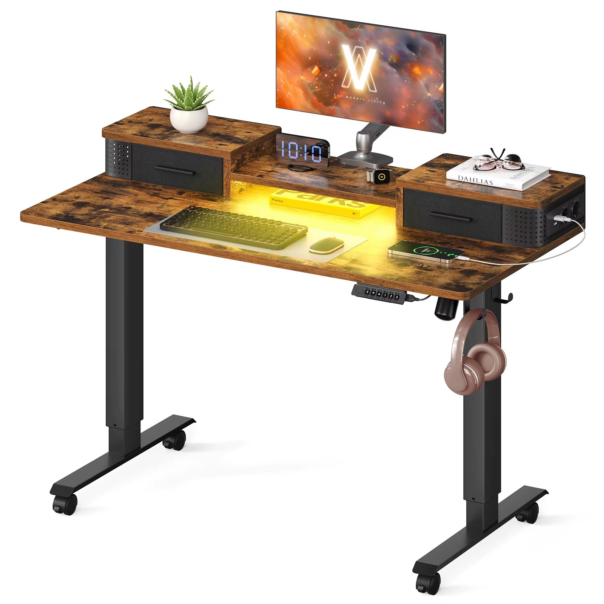

FW-C14 · 同一张大桌，白天工作晚上游戏
评分：88/100，排名15，第二批。分项：{'product_30': 28, 'need_25': 22, 'reference_20': 17, 'difference_15': 13, 'feasibility_10': 8}。评分是测试潜力，不是效果预测。
产品：Dual Ultra X 白色 180×80 cm。
用户：工作和游戏共用一张桌子的成年人。
需求：同一设备布局承接两类任务。
卖点：180×80大桌面与电动调节。
机会类型：四：跨场景与跨产品组合。
参考什么：参考游戏设备与照明的场景识别，不复制竞品内置灯或供电功能。
为什么：P3尺寸与坐站功能可验证；灯带与游戏设备均为外部道具。
如何差异化：同一间灰白工作室分别用日光和外置紫蓝桌后灯，桌子本身不发光。
场景：窗边灰白工作室，背景墙挂少量海报。
构图：上下双图，上图正面工作、下图从右后方看游戏；保证桌体、外设数量与位置一致。
人物及动作：成年人上图坐姿办公、下图坐姿持普通游戏手柄；不把整桌抬升到不合理高度。
渠道：Meta Feed。比例：4:5、1:1。德语主题：Ein Setup für Arbeit und Freizeit。
资格依据：白桌白架180×80在售变体；双电机；规格区高度60–125 cm不含桌板；多尺寸140/160/180/200 cm可选。
不能添加的宣称：营销段落160 kg载荷与规格区动态120 kg/静态160 kg不同；不做重载数字广告，先复核。
证据边界：有A类实际图片参考；具体原创场景和转化效果尚待测试。图片参考体现视觉方法，不构成竞品效果数据。需求证据：P3；跨用途为场景推断，不声称游戏性能提升。
参考原图

FLEX-GOOG-121FLEX-GOOG-121 · FlexiSpot · Google · 完整导出广告画面
原广告来源。详情日期与德国地区已核验。

SONG-GOOG-024SONG-GOOG-024 · SONGMICS · Google · 真实广告内的图像组件（非完整广告版式）
原广告来源。详情日期与德国地区已核验。